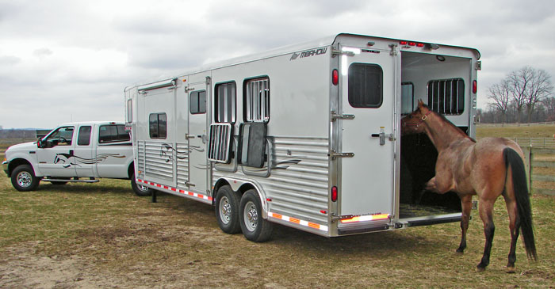

Feed, Barn Supplies and Trailers
Feed and Supply Stores
Looking for the stuff needed to take care of a horse? There is a lot of gear needed to take proper care of horses and equines. You'll need grooming tools, buckets, feed, hay, saddle racks, storage bins, and so on. Here is a list of merchants who stock feeds and hay(s), buckets, shavings, grooming equipment, saddle racks, and more.

| Store Name | Website | Street Address | County | Products Offered |
|---|---|---|---|---|
| Gro-Smart | http://www.grosmartnc.com/ | 250 S. Churton St., Hillsborough | Orange | Feed, hay, horse supplies, tack |
| Piedmont Feed and Garden Supply | http://www.piedmontfeed.com/ | 4805 NC Highway 54 West, Chapel Hill | Orange | Feed, hay, shavings, halters, horse supplies |
| Pittsboro Feed | http://www.pittsborofeed.com/ | 1103 East St., Pittsboro | Chatham | Feed, hay, horse and barn supplies, tack |
| Southern States | https://www.southernstates.com/storelocations/75647/ | 300 N. Greensboro St., Carrboro | Orange | Horse and farm supplies, feed |
| Tractor Supply | http://www.tractorsupply.com/ | 1701 NC Highway 86 S, Hillsborough | Orange | Bagged feeds, halters, grooming supplies, farm equipment |
Trailers and Equipment
Taking your horse off the farm requires trailers. Below is a list of trailer shops, and most offer repairs and service. Sometimes good, used trailers can be found on sites like CraigsList.

| Store Name | Website (or phone) | Street Address | County | Products Offered |
|---|---|---|---|---|
| C '&' F Trailers and Tack | 252-438-5883 | 4005 Raleigh Rd., Henderson | Vance | Trailers, equipment, supplies, tack |
| Double D Trailers | https://www.doubledtrailers.com/ | Pink Hill, NC | Lenoir | Trailers, custom trailers, equipment |
| Golden Gait Trailers | https://goldengait.com/ | 5051 Davidson Highway, Concord | Cabarrus | Trailers, custom trailers, equipment |
| Southern Alamance Trailer Co. | 336-376-6316 | 8372 Bethel Church Park Rd., Snow Camp | Alamance | Trailers, sales, service and equipment |
| Woodlief Trailer Sales | http://www.goretrailers.com | 5117 Purnell Rd., Wake Forest | Wake | Livestock and horse trailers, equipment |